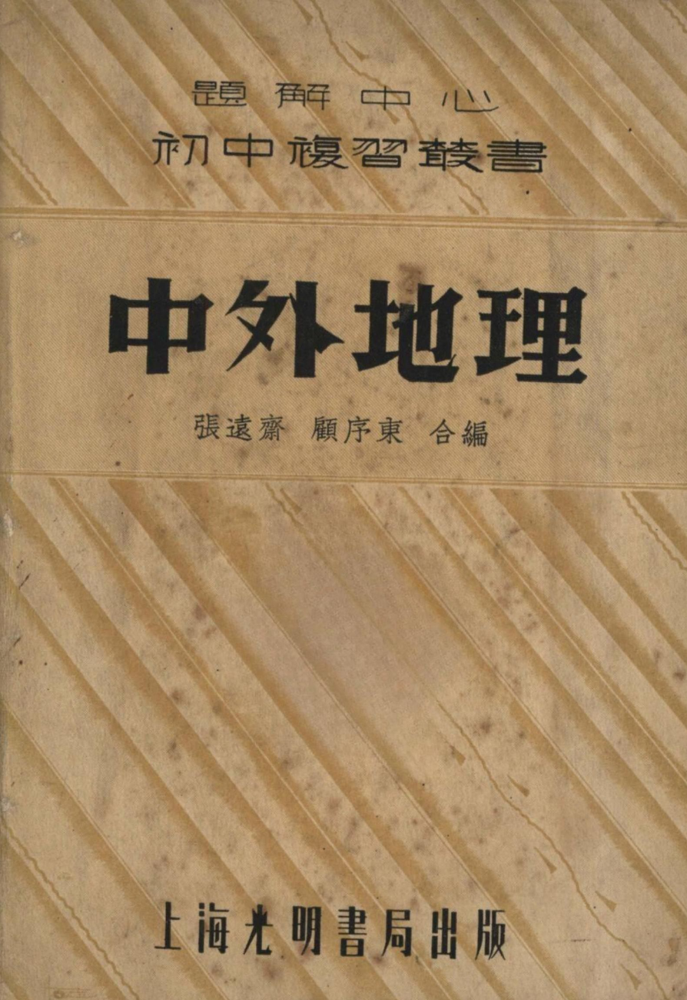

Occurrences
28
Exact minzu hits in this book

Textbook
This view contains all KWIC results for 姘戞棌 in this book, followed by the book's individual frequency result.
This table lists every minzu KWIC result found in this textbook.
| No. | Left context | Keyword | Right context |
|---|---|---|---|
| 341 | 浜烘垨涓€浜屼汉銆傞爢娴佽€屼笅,鍕㈠濂旈Μ,浣嗕笉鑳借閫嗘祦銆傛浮閬庝簡姘翠究璨犱箣鑰岃銆?6瑗?..搴烽櫎婕⑻呮棌澶?閭勬湁浠€楹?/td> | 姘戞棌 | ?瑗刻呭悍姘戞棌,姣旇純瑜囬洔,婕⑻呮棌澶?鏈夎棌鏃?鏈夌巰...鐜€銆佺櫧虆澶枫€併€岃挋鍙ょ瓑鏃?鍏朵腑浠ヨ棌鏃忕埐鏈€澶氥€傝棌鏃忓 |
| 342 | 闋嗘祦鑰屼笅,鍕㈠濂旈Μ,浣嗕笉鑳借閫嗘祦銆傛浮閬庝簡姘翠究璨犱箣鑰岃銆?6瑗?..搴烽櫎婕⑻呮棌澶?閭勬湁浠€楹芥皯鏃?瑗刻呭悍 | 姘戞棌 | ,姣旇純瑜囬洔,婕⑻呮棌澶?鏈夎棌鏃?鏈夌巰...鐜€銆佺櫧虆澶枫€併€岃挋鍙ょ瓑鏃?鍏朵腑浠ヨ棌鏃忕埐鏈€澶氥€傝棌鏃忓浣忓眳宸村畨浠ヨタ |
| 343 | 鍜屾硶灞畨鍗椼€傞潰绌嶄笁涔濆叓銆佷簲鍏笁骞虫柟鍏噷銆?浜?浜哄彛鍏ㄧ渷浜哄彛涓€鍗冮浂鍏崄浜旇惉銆傚钩鍧囨瘡鏂瑰叕閲屼簩鍗佸叚浜恒€傜渷鍏?/td> | 姘戞棌 | ,婕€屾棌浠ュ,鏈夎姳鑻楃巰鐜€銆佹摵澶枫€侀枊娆界瓑銆傜ó鏃忚闆?鐖插悇鐪佸啝銆?涓?鍦板舰鍏ㄧ渷鐩″爆楂樺湴,骞冲潎楂樺害鍦ㄤ竴鍗冧簲 |
| 344 | 鍥涘钩鏂瑰叕閲屻€傚湪鍏ㄥ湅涓潰绌嶆渶澶с€?浜?浜哄彛鍏ㄧ渷浜哄彛浜岀櫨浜斿崄涓冭惉銆傚瘑搴﹀钩鍧囨瘡鏂瑰叕閲屼笉鍒颁簩浜恒€備互鏉遍儴杓冨瘑, | 姘戞棌 | 闋楄闆?闄ゆ饥浜哄,鏈夌簭...闋洏銆佹澅骞插洏銆佸搱钖╁厠銆佹豢虆浜恒€佽挋鍙や汉绛夈€?涓?鍦板舰鏂扮枂鐪佷綅鏂兼垜鍦嬬殑瑗垮寳, |
| 345 | 绗洓绶ㄧ附绲愪汉鍙? | 姘戞棌 | 鎬庢ǎ閫犳垚鐨?姘戞棌涓嶅柈鏄竴绋汉鍙?鏇翠笉鍍呮槸涓€绋枃鍖?姘戞棌鐨勯€犳垚,鏄叏闈犺嚜鐒跺姏鐨勩€傝嚜鐒跺姏鏈€椤憲鐨勬湁鍏ó: |
| 346 | 绗洓绶ㄧ附绲愪汉鍙?姘戞棌鎬庢ǎ閫犳垚鐨? | 姘戞棌 | 涓嶅柈鏄竴绋汉鍙?鏇翠笉鍍呮槸涓€绋枃鍖?姘戞棌鐨勯€犳垚,鏄叏闈犺嚜鐒跺姏鐨勩€傝嚜鐒跺姏鏈€椤憲鐨勬湁鍏ó:灏辨槸琛€绲便€佺敓娲汇€?/td> |
| 347 | 绗洓绶ㄧ附绲愪汉鍙?姘戞棌鎬庢ǎ閫犳垚鐨?姘戞棌涓嶅柈鏄竴绋汉鍙?鏇翠笉鍍呮槸涓€绋枃鍖? | 姘戞棌 | 鐨勯€犳垚,鏄叏闈犺嚜鐒跺姏鐨勩€傝嚜鐒跺姏鏈€椤憲鐨勬湁鍏ó:灏辨槸琛€绲便€佺敓娲汇€佽獮瑷€銆佸畻鏁欍€侀ⅷ淇椼€佺繏鎱?閫欏叚绋嚜鐒跺姏, |
| 348 | 绋?灏辨槸琛€绲便€佺敓娲汇€佽獮瑷€銆佸畻鏁欍€侀ⅷ淇椼€佺繏鎱?閫欏叚绋嚜鐒跺姏,鑳藉絸浣夸汉鍜屼汉婕告鎺ヨЦ,婕告绲愬悎,褰㈡垚鐖叉暣鍊?/td> | 姘戞棌 | 銆?鑷劧鐠板鑸囨皯鏃忔枃鍖栨湁鐢氶航闂滀總?鍘熷姘戞棌瀹屽叏鍙楁敮閰嶆柤鑷劧鐠板,鑷劧鐠板鑸囨皯鏃忔枃鍖栨湁椤憲鐨勯棞淇傘€傚叾涓?/td> |
| 349 | 銆佽獮瑷€銆佸畻鏁欍€侀ⅷ淇椼€佺繏鎱?閫欏叚绋嚜鐒跺姏,鑳藉絸浣夸汉鍜屼汉婕告鎺ヨЦ,婕告绲愬悎,褰㈡垚鐖叉暣鍊嬫皯鏃忋€?鑷劧鐠板鑸?/td> | 姘戞棌 | 鏂囧寲鏈夌敋楹介棞淇?鍘熷姘戞棌瀹屽叏鍙楁敮閰嶆柤鑷劧鐠板,鑷劧鐠板鑸囨皯鏃忔枃鍖栨湁椤憲鐨勯棞淇傘€傚叾涓昏鐨勯棞淇傛湁:姘ｅ€櫶?/td> |
| 350 | ,閫欏叚绋嚜鐒跺姏,鑳藉絸浣夸汉鍜屼汉婕告鎺ヨЦ,婕告绲愬悎,褰㈡垚鐖叉暣鍊嬫皯鏃忋€?鑷劧鐠板鑸囨皯鏃忔枃鍖栨湁鐢氶航闂滀總?鍘熷 | 姘戞棌 | 瀹屽叏鍙楁敮閰嶆柤鑷劧鐠板,鑷劧鐠板鑸囨皯鏃忔枃鍖栨湁椤憲鐨勯棞淇傘€傚叾涓昏鐨勯棞淇傛湁:姘ｅ€櫶呭瘨鐓栨俯搴︾殑涓嶅悓,闄愬埗浜洪 |
| 351 | ,婕告绲愬悎,褰㈡垚鐖叉暣鍊嬫皯鏃忋€?鑷劧鐠板鑸囨皯鏃忔枃鍖栨湁鐢氶航闂滀總?鍘熷姘戞棌瀹屽叏鍙楁敮閰嶆柤鑷劧鐠板,鑷劧鐠板鑸?/td> | 姘戞棌 | 鏂囧寲鏈夐’钁楃殑闂滀總銆傚叾涓昏鐨勯棞淇傛湁:姘ｅ€櫶呭瘨鐓栨俯搴︾殑涓嶅悓,闄愬埗浜洪鍦ㄥ湴鐞冧笂鐨勬暎浣堛€傛俯甯朵汉鍙ｇ瀵?瀵掔啽甯?/td> |
| 352 | 鐣般€傚湴褰⑻呭北宀充汉姘戣定鏂间繚瀹?澶ф渤娴佸煙,鏄撴柤閫叉,婵辫繎娴锋磱鍙紦鍕靛啋闅鐖?娌欐紶鑸囪崚鍘熷彲椹呬娇鎺犲オ銆傚洜姝? | 姘戞棌 | 鎬ц垏绀炬渻绲勭箶鍚勬湁鍏剁壒榛炶€屾畩鐣般€傝嚜鐒惰垏鐗╄唱鐢熸椿虆鐗╄唱鐢熺湅鐖蹭汉椤炴枃鍖栫殑鍩虹,鍥犺嚜鐒惰硿鑸囩殑涓嶅悓,鑰屾櫤鎱х▼搴?/td> |
| 353 | 绺界祼渚濊。鏈嶈垏瑁濋＞涔嬭８闇茶垏鍚﹁€岄’绀哄瘨鐔卞付鐨勫崁鍒ャ€?涓彲 | 姘戞棌 | 鍒嗗竷鐨勭媭鍐垫€庢ǎ?涓彲姘戞棌妲爆榛冪ó,鍏朵腑鍙垎鐖叉饥婊胯挋銆嶅洏钘忚嫍绛夋棌,鍚勬棌鍒嗗竷鐙€鍐?澶ф姷婕⑻呮棌浠ラ粌虆娌炽€侀暦 |
| 354 | 绺界祼渚濊。鏈嶈垏瑁濋＞涔嬭８闇茶垏鍚﹁€岄’绀哄瘨鐔卞付鐨勫崁鍒ャ€?涓彲姘戞棌鍒嗗竷鐨勭媭鍐垫€庢ǎ?涓彲 | 姘戞棌 | 妲爆榛冪ó,鍏朵腑鍙垎鐖叉饥婊胯挋銆嶅洏钘忚嫍绛夋棌,鍚勬棌鍒嗗竷鐙€鍐?澶ф姷婕⑻呮棌浠ラ粌虆娌炽€侀暦姹熴€佺菠姹熶笁澶ф祦鍩熺埐鏍规摎鍦?/td> |
| 355 | ..搴枫€侀潙...娴枫€侀洸...鍗椼€佸洓虆宸濈瓑鍦般€傝嫍虆鏃忓鍦ㄥ崡宥轰竴甯躲€?涓彲姘懱呮棌鎬ф湁浠€楹藉劒榛炲拰缂洪粸?涓彲 | 姘戞棌 | 鎬уぇ閮芥槸鍫呭繊銆佸嫟鍎夈€佽獱瀵︺€佽€愬嫗鐨勩€備絾鍥犺嚜鐒跺湴鐞嗙殑褰遍熆,鍚勫湴姘戞€?鍙堝ぇ鍚屽皬鐣?鍗戒互婕㈡棌瑷€,榛冩渤娴佸煙鐨勪汉 |
| 356 | ,鏈夊啋闅€插彇绮剧銆傝挋虆銆佽棌虆銆併€屽洏璜告棌灏嶆柤瀹楁暀,閮戒俊浠版サ娣?鎵€浠ュ湗绲愬姏寰堝挤銆傛豢鏃忛鍕?鑻楁棌鎱撴倣銆備絾鍚?/td> | 姘戞棌 | 鏈変竴鍏卞悓鐨勫急榛?鍗藉洜鍙楀畻鏃忚蹇靛お娣?浠ヨ嚧鍒╁繁蹇冨緢寮?缂轰箯鍚屾儏蹇?瀵屾湁鎰涢剷蹇?鏁疯鑻熷畨,娌掓湁閬犲ぇ鐨勭洰鐨?/td> |
| 357 | 鍗佸€嶆柤鑻卞€笁宄?鍗佷竴鍊嶆柤娉曘€佹剰虆銆備絾澧炲姞鐨勯€熷害鍙嶈純鍚勫湅鐖查伈銆備腑虆灞卞厛鐢熷皪鏂兼垜鍦嬩汉鍙ｇ殑娓涘皯,浠ョ埐鏄垜鍊?/td> | 姘戞棌 | 鐨勫嵄闅€備粬瑾?鈥樺悇鍦嬫墍浠ヤ竴鏅備笉鑳藉悶鍊備腑鍦嬬殑鍘熷洜,涔冪敱鏂煎悇鍦嬩汉鍙ｈ垏涓湅浜哄彛姣旇純,灏欏爆閬庡皯銆傚埌涓€鐧惧勾浠ュ緦 |
| 358 | 鎴戝湅浜哄彛涓嶅鍔?鍚勫湅浜哄彛澧炲姞妤靛,鍓囧悇鍦嬪嵔灏囦互鍏跺鏁歌€屽緛鏈嶅皯鏁?涓湅涓嶄絾澶卞幓涓绘瑠瑕佷骸鍦?涓湅浜鸿浠栧€?/td> | 姘戞棌 | 鎵€娑堝寲,閭勮婊呯ó銆?鎴戝湅浜哄彛鐢氶航鍦版柟鏈€瀵?鐢氶航鍦版柟鏈€鐤?浜哄彛鍒嗗竷閬庢柤涓嶅钩鍧?鏈変粈楹藉紛瀹?鎴戝湅浜哄彛鍒嗕綀 |
| 359 | 鍏跺叡鍜屽湅銆傞倓鏈変烤璺敮銆佷笉虆涓广€佸凹浼埦銆佷紛鎷夊厠璜稿湅,闆栨湁鐛ㄧ珛鍦嬬殑鍚嶇京,瀵﹀爆鏂艰嫳鍦嬬殑鍕㈠姏绡勫湇銆?浜炋呮床鐨?/td> | 姘戞棌 | 鍒嗗竷鐙€鍐垫€庢ǎ?浜炋呮床澶ч櫢涓?闄や簡瑗块儴鍜屽崡閮ㄦ槸鐧界ó浜虹殑鍗€鍩熷,鍏堕閮界埐榛冪ó浜烘墍鍒嗗竷銆傚鍦ㄤ腑虆鍦嬫湁婕⑻呫€?/td> |
| 360 | 闄镐笂,闄や簡瑗块儴鍜屽崡閮ㄦ槸鐧界ó浜虹殑鍗€鍩熷,鍏堕閮界埐榛冪ó浜烘墍鍒嗗竷銆傚鍦ㄤ腑虆鍦嬫湁婕⑻呫€佹豢銆屻€佽挋銆屻€佸洏虆銆佽棌鍚?/td> | 姘戞棌 | ,鍦ㄦ棩虆鏈殑鏈夊ぇ鍜屾棌,鍦ㄦ湞虆楫殑鏈変笁虆闊撴棌,鍦ㄥ湡虆鑰冲叾鐨勬湁绐佸帴鏃忋€傜櫧绋灞呮柤鍗板害銆佹尝鏂€侀樋鍓屼集銆佹晬鍒?/td> |
| 361 | ,涔忓缓瑷兘鍔?B鐗╃敘璞愬瘜,璎€鐢熷鏄?鑷存皯鎬ф嚩鎯?涔忛€插彇鐨勫績銆備簩浜烘枃涓婄殑鍘熷洜虆A瑾炶█瑜囬洔,澶氳嚦鐧鹃绋? | 姘戞棌 | 涓嶆槗绲变竴,绮剧鏁ｆ极;B闅庣礆妫毚,涔忓湗绲愬績;銆傝糠淇″畻鏁?鍦嬪瑙€蹇佃杽寮便€?鍗疤呭害閭ｄ簺閮芥渻鍦ㄥ晢妤笂浣旂潃閲嶈 |
| 362 | 鍦嬨€傚垎杩板涓?涓€鑻?..灞烤璺?..鏀?Baluchistan)...鍗犱紛虆铇珮鍘熸澅鍗楅儴,鐖蹭竴鍊嬮亰鐗?/td> | 姘戞棌 | 鐨勯厠闀峰湅銆傚垎鐩磋絼鍜屽爆钘╀簩閮?鍖楅儴鍙楀嵃虆搴︽斂 |
| 363 | an)鐖茬崹绔嬮儴钀姐€傚ぇ鎴板緦,鍦熷爆鍦板垎宕?閭ｆ檪鏈夋饥蹇椞呯帇鍦婬ejaz)寤哄湅鏂肩磪虆娴锋部宀搞€備竴涔濅簩鍥涘勾鑿搱姣?/td> | 姘戞棌 | 濂夊収蹇楃帇楱风壒鐖查闋?婊呬簡婕㈠織,鍏间簡浠?/td> |
| 364 | 鍦板嫝浣庡钩,娴峰哺绶氭渶闀?涓斿鏇叉姌,鐖蹭績閫叉枃鏄庣殑閲嶈鍘熷洜銆備簩浜烘枃鏂归潰虆姘撮櫢浜ら€?鐒′笉瀹岀編,閻甸亾瀵嗗铔涚恫涓?/td> | 姘戞棌 | 鎬濇兂涓婚噸閫插寲,绲愭灉绉戝鐧奸仈,鎴愮埐浠婃棩鐨勭垱鐕︽枃鍖栥€備笁鏀挎不鏂归潰虆姝愄呮床闈㈢闆栧皬,鍙槸鏀挎不鍗€鍩熺壒澶?鍦嬮殯闁?/td> |
| 365 | 鍖堛€併€嶅ゥ銆併€岀憺涓夊湅鐨勬斂楂旀И娉併€傚ゥ鍦板埄鎴板墠鑸囧寛鐗欏埄鑱悎鐖蹭竴甯濆湅,绋卞ゥ鏂Μ鍔犲笣鍦嬨€傜ó鏃忔サ瑜囬洔銆傚ぇ鎴板緦,鍚?/td> | 姘戞棌 | 鎴栫崹绔嬫垨姝搁檮绁栧湅,鍏╁湅鐤嗗煙澶у墛銆傚湅鍏т害璧蜂簡闈╁懡,鍚勫垎闆㈢埐鍏卞拰鍦嬨€備絾鍖堢墮鍒╂柤涓€涔濅簩銆囧勾鍙堟敼鐖茬帇鍦嬨€傜憺澹?/td> |
| 366 | 姝愮緟宸存床鑱锋瑠鏄彈鐞嗗湅闅涚殑瑷磋銆?鐣ヨ姣?..鍒╂檪銆佽嵎虆铇殑 | 姘戞棌 | 鎬?浜屽湅鐨勪汉鍙ｅ瘑搴︽€庢ǎ?姣斿埄鏅傛皯鏃忓崡鍖楀悇鐣?鍖楅儴鏄虆闋撴棌,鍗楅儴鏄媺虆涓佹棌,鍏╄€呰獮瑷€涓嶅悓,鏂肩当娌讳笂寰?/td> |
| 367 | 姝愮緟宸存床鑱锋瑠鏄彈鐞嗗湅闅涚殑瑷磋銆?鐣ヨ姣?..鍒╂檪銆佽嵎虆铇殑姘戞棌鎬?浜屽湅鐨勪汉鍙ｅ瘑搴︽€庢ǎ?姣斿埄鏅?/td> | 姘戞棌 | 鍗楀寳鍚勭暟,鍖楅儴鏄虆闋撴棌,鍗楅儴鏄媺虆涓佹棌,鍏╄€呰獮瑷€涓嶅悓,鏂肩当娌讳笂寰堜笉渚垮埄銆傝嵎虆铇汉姘戣硣鎬?鍕ゅ媺濂芥綌, |
| 368 | 闇€瑕併€傜珛璜栫磾鎿氱附鐞嗛伜鏁庢厠搴︿箣鍏夋槑,涓嶈█鍙柣,鑰岃█瑭炰箣鎳囧垏,鏂囧瓧涔嬮€氫織,灏よ兘浣夸汉婵€鍕靛ギ鐧?娌圭劧鑰岃捣鏂扮殑 | 姘戞棌 | 瑙€蹇点€傛晠鍏ㄥ湅鍚勪腑瀛稿皣鍘熸湰鎺′綔鍏皯鏁庢湰鑰?宸查仈鏁哥櫨鏍′箣澶?閵锋暩鍦ㄦ暩鍗佽惉鍐婁互涓娿€備粖缍撳緪|鍩逛粊鍏堢敓璀垚婕㈡枃 |
Occurrences
28
Exact minzu hits in this book
Analysis chars
88,131
Cleaned characters used as denominator
Per 10k chars
3.18
Normalized frequency
| Subject | Geography |
|---|---|
| Textbook | 涓鍦扮悊 |
| Keyword | minzu (姘戞棌) |
| Raw occurrences | 28 |
| Occurrences per 10,000 analysis characters | 3.18 |